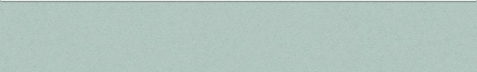

Science
Learning Aims
A double award, earning two grades, IGCSE Co-ordinated Sciences gives students the opportunity to study Biology, Chemistry and Physics within a cross-referenced, scientifically coherent syllabus. Students learn about the basic principles of each subject through a mix of theoretical and practical studies, whilst also developing an understanding of the scientific skills essential for further study. Students learn how science is studied and practised, and become aware that the results of scientific research can have both good and bad effects on individuals, communities and the environment. As well as focusing on the individual sciences, the syllabus therefore enables students to better understand the technological world in which they live, and take an informed interest in science and scientific developments.
Some students will be invited to take the IGCSE Combined Science single award at Core Level.
Course Content
Introduction to
Briefly, Physics is about explaining processes in the real world, Chemistry is about the materials used and Biology is about living things. Physics covers matter, force and motion, energy, electricity and waves. Chemistry covers raw materials, use of materials, chemicals in the home, energy changes, soil and agriculture, and the periodic table. Biology covers the variety of organisms, the processes of life, living organisms and their environment and the continuity of life.
The pursuit of Science is essentially a practical subject with scientific investigations being the deciding factor between what is accepted as truth and what is rejected. Therefore the course is based, as far as possible, on practical work. Practical work, however, cannot proceed without a sound theoretical framework and there will be a considerable increase in the amount of homework set compared to student’s current work load in Year 9. There is also an increase in the amount of theoretical work required in Years 10 and 11.
Students are expected not only to complete work set but also to read text books and magazines on their own without prompting from staff. Students are also expected to become more self-reliant, independent and collaborative in their approach to work as their scientific understanding develops.
Who is the Course Suitable For?
The double award at IGCSE is accepted by the major professional bodies and by most places of higher education as a qualification for admission. The course provides a very solid foundation for progression onto IB Science courses in Year 12.
This particular course has three advantages:
-
1.It allows students to continue studying all three Sciences instead of having to drop one of them at the end of Year 9. This allows students a full range of choice for IB.
-
2.Students continued contact with three major areas of Science does not cause an imbalance in the rest of their studies.
-
3.Career options concerning Science are all kept open until the end of Year 11, thus delaying any decisions until a more appropriate time.
Assessment
IGCSE Sciences - Co-ordinated (CIE 0654 Double Award)
IGCSE Science is assessed through both Coursework and a end-of-course examination. Coursework takes up 20% of the examination, while the rest is split into 3 parts. There will be two levels available to students depending on their previous examination results. Students will sit two examinations, at either the “Core” or “Extended” level.
The Core examination lasts a total of 2.75 hours for the two written papers, with another paper being lab coursework. The highest grade students can achieve in Core examinations will be CC. Note that it is CC and not C as it is a Double Award.
The Extended Examination lasts a total of 2.75 hours for the two written papers, with another paper being lab coursework. The highest grade students can achieve in Extended examinations will be A*A*. Note that it is A*A* and not A* as it is a Double Award.
